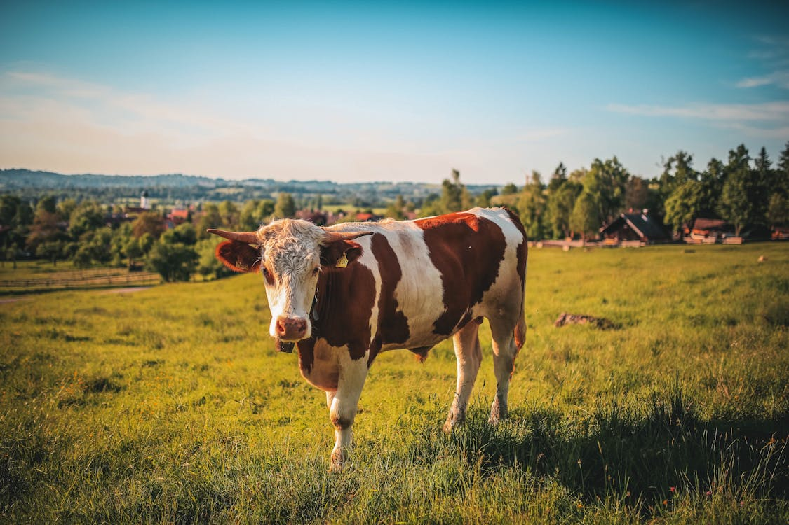

Cow
Origin and Habitat:
Cows, also known as cattle, are domesticated members of the Bovidae family. They are found worldwide, often in grasslands, farmlands, and pastures where they are raised for their milk, meat, and hides.
Physical Traits:
Cows are large, herbivorous animals characterized by their sturdy bodies, cloven hooves, and often distinctive coat patterns. They possess a complex digestive system with four stomach compartments, enabling them to efficiently process fibrous plant material.
Behavior:
Cows are social animals that form strong bonds within their herds. They communicate through vocalizations, body language, and even pheromones. As ruminants, they spend a significant amount of time grazing and ruminating to aid digestion.
Lifespan:
The average lifespan of a cow is around 15 to 20 years, though this can vary depending on factors such as breed, living conditions, and purpose (dairy or meat production).